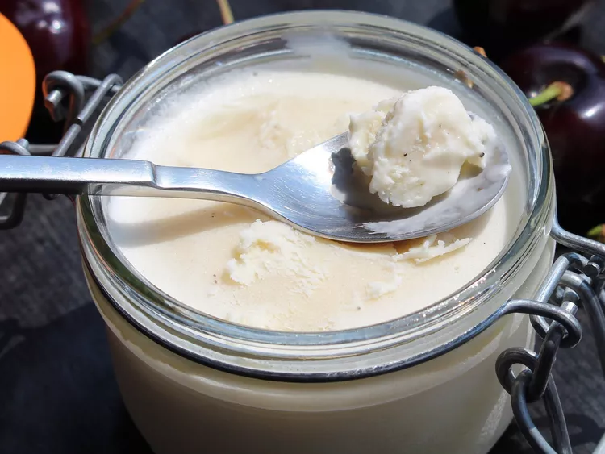

2-Ingredient Ice Cream

Description
Ready for some delicous ice cream thats only 2 steps? Get ready for greatness with this 2-ingredient ice cream recipe!
Ingredients
- 1 pint heavy whipping cream
- 1(14 ounce) can sweetened condensed milk
Steps
- Beat cream in a chilled glass or metal bowl with an electric mixer until soft peaks form; add condensed milk and beat until thick and well combined.
- Transfer mixture to a shallow container and over with plastic wrap; freeze until solid, about 6 hours.
Home